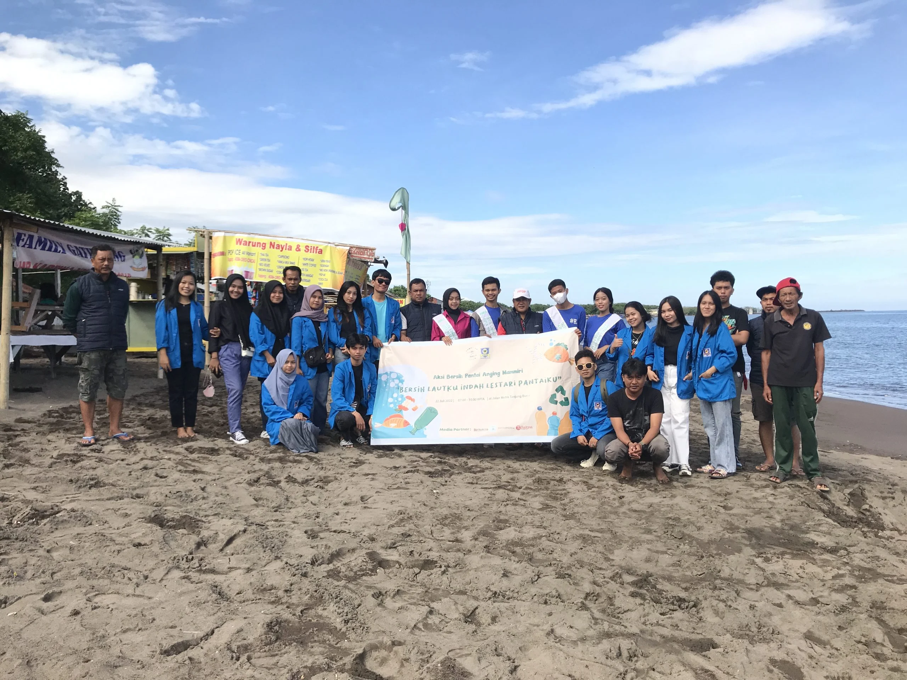
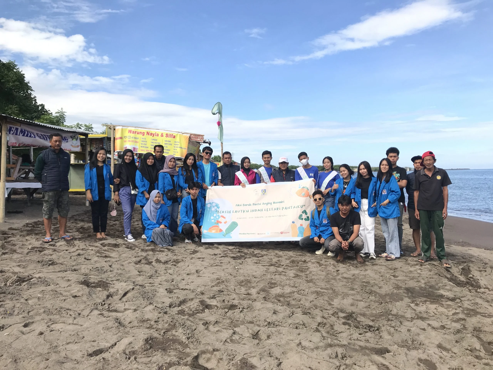

.png)


 

Dengan menjaga populasi ikan dan kesehatan terumbu karang, masyarakat pesisir bisa terus mengandalkan perikanan untuk memenuhi kebutuhan hidup mereka. Selain itu, wisatawan juga akan tertarik datang untuk menikmati keindahan laut, sehingga membuka peluang kerja di sektor ekowisata, seperti penyewaan perahu, pemandu wisata, dan penginapan.
Mengurangi sampah plastik dan limbah lainnya di laut akan membuat air laut lebih bersih dan aman. Ini penting untuk kesehatan masyarakat pesisir yang sering bergantung pada laut untuk sumber makanan dan air bersih. Selain itu, lingkungan laut yang sehat juga mendukung kehidupan hewan laut yang berperan penting dalam ekosistem.
Program-program dari kerja sama internasional, seperti kampanye dan pelatihan, membantu masyarakat Indonesia lebih memahami betapa pentingnya menjaga laut. Dengan meningkatnya kesadaran ini, banyak orang mulai mengurangi penggunaan plastik, menjaga kebersihan pantai, dan lebih peduli pada lingkungan sekitar, sehingga dapat mengurangi kerusakan laut.